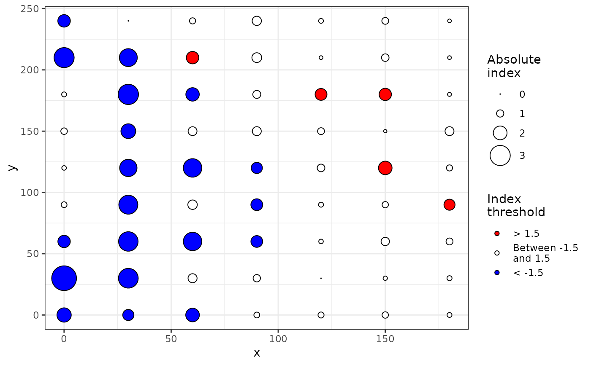
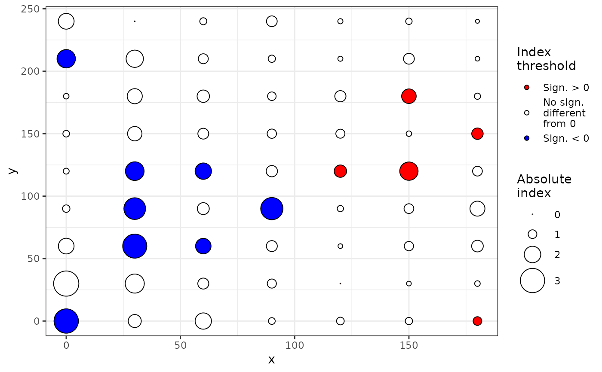

sadie performs the SADIE procedure. It computes different indices and
probabilities based on the distance to regularity for the observed spatial
pattern and a specified number of random permutations of this pattern. Both
kind of clustering indices described by Perry et al. (1999) and Li et al.
(2012) can be computed.
Usage
sadie(data, ...)
# S3 method for data.frame
sadie(
data,
index = c("Perry", "Li-Madden-Xu", "all"),
nperm = 100,
seed = NULL,
threads = 1,
...,
method = "shortsimplex",
verbose = TRUE
)
# S3 method for matrix
sadie(
data,
index = c("Perry", "Li-Madden-Xu", "all"),
nperm = 100,
seed = NULL,
threads = 1,
...,
method = "shortsimplex",
verbose = TRUE
)
# S3 method for count
sadie(
data,
index = c("Perry", "Li-Madden-Xu", "all"),
nperm = 100,
seed = NULL,
threads = 1,
...,
method = "shortsimplex",
verbose = TRUE
)
# S3 method for incidence
sadie(
data,
index = c("Perry", "Li-Madden-Xu", "all"),
nperm = 100,
seed = NULL,
threads = 1,
...,
method = "shortsimplex",
verbose = TRUE
)Arguments
- data
A data frame or a matrix with only three columns: the two first ones must be the x and y coordinates of the sampling units, and the last one, the corresponding disease intensity observations. It can also be a
countor anincidenceobject.- ...
Additional arguments to be passed to other methods.
- index
The index to be calculated: "Perry", "Li-Madden-Xu" or "all". By default, only Perry's index is computed for each sampling unit.
- nperm
Number of random permutations to assess probabilities.
- seed
Fixed seed to be used for randomizations (only useful for checking purposes). Not fixed by default (= NULL).
- threads
Number of threads to perform the computations.
- method
Method for the transportation algorithm.
- verbose
Explain what is being done (TRUE by default).
Details
By convention in the SADIE procedure, clustering indices for a donor unit (outflow) and a receiver unit (inflow) are positive and negative in sign, respectively.
References
Perry JN. 1995. Spatial analysis by distance indices. Journal of Animal Ecology 64, 303–314. doi:10.2307/5892
Perry JN, Winder L, Holland JM, Alston RD. 1999. Red–blue plots for detecting clusters in count data. Ecology Letters 2, 106–113. doi:10.1046/j.1461-0248.1999.22057.x
Li B, Madden LV, Xu X. 2012. Spatial analysis by distance indices: an alternative local clustering index for studying spatial patterns. Methods in Ecology and Evolution 3, 368–377. doi:10.1111/j.2041-210X.2011.00165.x
Examples
set.seed(123)
# Create an intensity object:
my_count <- count(aphids, mapping(x = xm, y = ym))
# Only compute Perry's indices:
my_res <- sadie(my_count)
#> Computation of Perry's indices:
my_res
#> Spatial Analysis by Distance IndicEs (sadie)
#>
#> Call:
#> sadie.count(data = my_count)
#>
#> Ia: 1.2569 (Pa = 0.06)
#>
summary(my_res)
#>
#> Call:
#> sadie.count(data = my_count)
#>
#> First 6 rows of clustering indices:
#> x y i cost_flows idx_P idx_LMX prob
#> 1 0 0 0 -148.09142 -2.2522651 NA NA
#> 2 30 0 0 -91.27589 -1.5275799 NA NA
#> 3 60 0 3 -108.16654 -2.1907077 NA NA
#> 4 90 0 7 -40.99681 -0.6336085 NA NA
#> 5 120 0 9 30.00000 0.7628231 NA NA
#> 6 150 0 1 -42.31033 -0.7946351 NA NA
#>
#> Summary indices:
#> overall inflow outflow
#> Perry's index 1.309858 -1.458153 1.119927
#> Li-Madden-Xu's index NA NA NA
#>
#> Main outputs:
#> Ia: 1.2569 (Pa = 0.06)
#>
#> 'Total cost': 1061.153
#> Number of permutations: 100
#>
plot(my_res)
plot(my_res, isoclines = TRUE)
set.seed(123)
# Compute both Perry's and Li-Madden-Xu's indices (using multithreading):
my_res <- sadie(my_count, index = "all", threads = 2, nperm = 20)
#> Computation of Perry's indices:
#> Computation of Li-Madden-Xu's indices:
my_res
#> Spatial Analysis by Distance IndicEs (sadie)
#>
#> Call:
#> sadie.count(data = my_count, index = "all", nperm = 20, threads = 2)
#>
#> Ia: 1.3068 (Pa = 0.1)
#>
summary(my_res)
#>
#> Call:
#> sadie.count(data = my_count, index = "all", nperm = 20, threads = 2)
#>
#> First 6 rows of clustering indices:
#> x y i cost_flows idx_P idx_LMX prob
#> 1 0 0 0 -148.09142 -2.4609396 -1.7923639 0.1428571
#> 2 30 0 0 -91.27589 -1.6062538 -1.3181135 0.2857143
#> 3 60 0 3 -108.16654 -2.0668079 -2.0209243 0.1428571
#> 4 90 0 7 -40.99681 -0.6748373 -0.7784592 0.6190476
#> 5 120 0 9 30.00000 0.8203688 0.8187045 0.2857143
#> 6 150 0 1 -42.31033 -0.8743206 -0.6364018 0.7619048
#>
#> Summary indices:
#> overall inflow outflow
#> Perry's index 1.349214 -1.494403 1.170291
#> Li-Madden-Xu's index 1.334663 -1.455131 1.208855
#>
#> Main outputs:
#> Ia: 1.3068 (Pa = 0.1)
#>
#> 'Total cost': 1061.153
#> Number of permutations: 20
#>
plot(my_res) # Identical to: plot(my_res, index = "Perry")

plot(my_res, index = "Li-Madden-Xu")

set.seed(123)
# Using usual data frames instead of intensity objects:
my_df <- aphids[, c("xm", "ym", "i")]
sadie(my_df)
#> Computation of Perry's indices:
#> Spatial Analysis by Distance IndicEs (sadie)
#>
#> Call:
#> sadie.data.frame(data = my_df)
#>
#> Ia: 1.2569 (Pa = 0.06)
#>